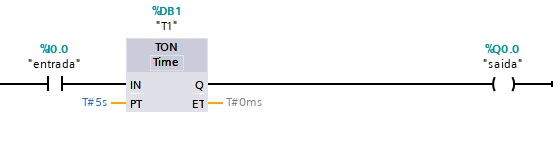
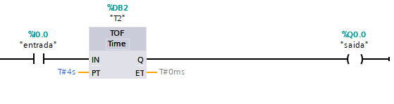
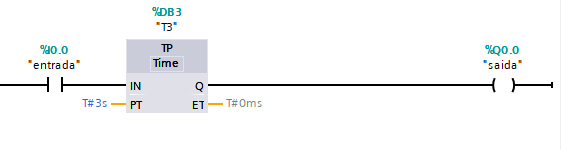
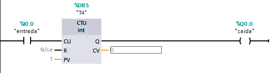
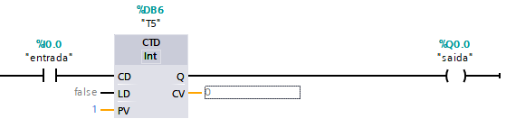
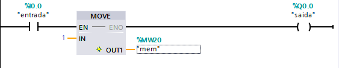
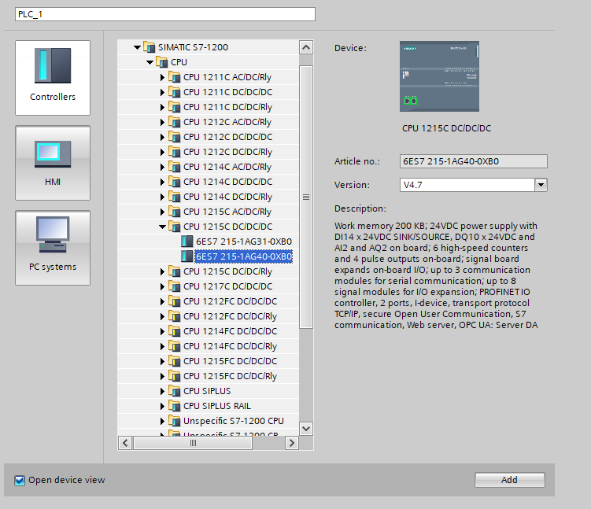
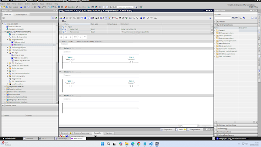
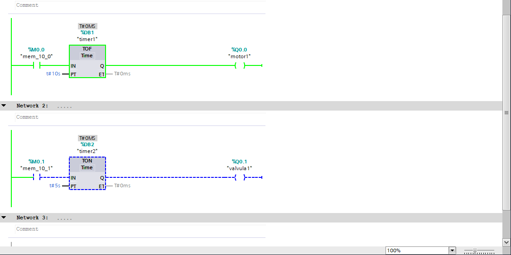
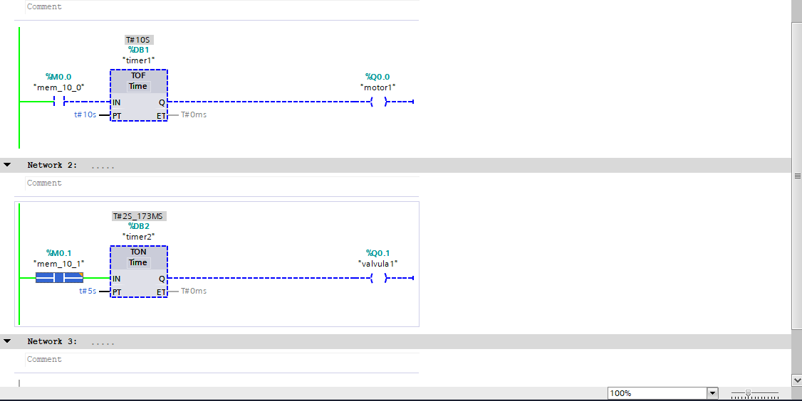

Funciona como um filtro de segurança. A saída só é ativada se o sinal de entrada permanecer ON continuamente pelo tempo programado. Se o sinal cair 1 milissegundo antes, o tempo zera.
Na prática
Aguardar 5 segundos após a detecção de uma garrafa antes de iniciar o enchimento.

TOFF (Timer Off-Delay | Atraso para Desligar)
Mantém tudo rodando por um "tempo extra". Quando o sinal de entrada desliga, a saída continua ativa até que a contagem regressiva termine.
Na prática
Manter a ventilação de um painel elétrico ligada por 3 minutos após o motor principal ser desligado para dissipar o calor.

TP (Pulse Timer | Temporizador de Pulso)
Precisão sem interrupções. Ao receber um único pulso na entrada, ele gera um sinal de saída com duração fixa. Mesmo que a entrada mude de estado, o tempo corre até o final.
Na prática
Disparar um jato de ar comprimido por exatamente 500ms para ejetar uma peça defeituosa.

Controle de Fluxo: Contadores (Counters)
CTU (Count Up | Contador Crescente)
Soma +1 a cada pulso recebido na entrada. Quando atinge o valor limite estipulado, aciona a saída. Pode ser zerado a qualquer momento via pino de Reset.
Na prática
Contar 12 caixas em uma esteira para fechar um lote e acionar o braço robótico de paletização.

CTD (Count Down | Contador Decrescente)
Subtrai -1 a cada pulso. A saída liga quando a contagem chega a zero. Permite recarregar o valor inicial com um clique.
Na prática
Gerenciar as vagas disponíveis em um estacionamento inteligente conforme os carros entram.

Inteligência de Dados: Mover e Transferir
MOVE (Move Value | Mover Valor)
É o comando de "copiar e colar" da automação. Ele pega o valor de uma variável ou constante na entrada e transfere instantaneamente para o destino.
Na prática
Enviar um novo setpoint de temperatura digitado pelo operador na IHM diretamente para o bloco de controle do processo.

Explicação de cada símbolo (da esquerda para a direita)
1. == (Igual a):
● Condição: %MW20 == 1
● Dá passagem se a memória for exatamente igual a 1.
2. <> (Diferente de):
● Condição: %MW20 <> 1
● Dá passagem se a memória for qualquer valor, exceto 1 (ex: 0, 2, -5).
3. >= (Maior ou Igual a):
● Condição: %MW20 >= 1
● Dá passagem se a memória for 1 ou qualquer número maior (1, 2, 3...).
4. <= (Menor ou Igual a):
● Condição: %MW20 <= 1
● Dá passagem se a memória for 1 ou qualquer número menor (1, 0, -1...).
5. > (Maior que):
● Condição: %MW20 > 1
● Dá passagem apenas se a memória for estritamente maior que 1 (2, 3, 4...). O valor 1 fica de fora.
6. < (Menor que):
● Condição: %MW20 < 1
● Dá passagem apenas se a memória for estritamente menor que 1 (0, -1, -2...). O valor 1 fica de fora.
Seleção e Configuração do Hardware (O Modelo do CLP)
Antes de começar qualquer programação de fábrica, o primeiro passo é escolher o cérebro eletrônico que vai controlar tudo: o CLP (Controlador Lógico Programável). Na tela de configuração do software (mostrada na imagem do catálogo), foi selecionado o seguinte equipamento:
Modelo: SIMATIC S7-1200
CPU: CPU 1215C DC/DC/DC
Código do Produto (Article No.): 6ES7 215-1AG40-0XB0
Versão do Firmware: V4.7
O que isso significa na prática? Esse modelo de CLP funciona com alimentação de 24V contínuos (DC). Ele possui 14 entradas digitais (para ler botões e sensores) e 10 saídas digitais (para mandar energia para motores e válvulas), além de conexões de rede PROFINET para se comunicar com o computador de monitoramento.

Lógica Inicial: Ligação Direta (Antes dos Temporizadores)
Na imagem que mostra o programa limpo no início do projeto (sem os blocos cinzas de tempo), temos uma ligação direta simples. Em programação Ladder, as linhas funcionam como fios elétricos:
Network 1 (Controle da Válvula): O contato de entrada "mem_10_0" está diretamente ligado à bobina de saída "valvula". Se o botão for apertado, a válvula liga na hora. Se soltar, ela desliga imediatamente.
Network 2 (Controle do Motor): O contato de entrada "mem_10_1" está diretamente ligado ao "motor". O funcionamento é o mesmo: apertou o botão o motor liga, soltou o botão ele desliga.
Por que mudar isso? Na indústria, ligar e desligar coisas de forma instantânea nem sempre é seguro ou eficiente. Por isso, evoluímos o projeto adicionando os temporizadores.

O Funcionamento Prático com os Temporizadores
Ao colocar os blocos temporizadores no circuito, mudamos totalmente o comportamento da máquina para torná-la inteligente. No modo de monitoramento do computador, a linha verde contínua significa energia passando e a linha azul tracejada significa circuito desligado.
O Bloco TOF (Atraso para Desligar o Motor1)
O TOF funciona como a luz do corredor de um prédio: você aperta o botão, ela liga na hora. Quando você solta o botão, ela continua acesa por um tempo e desliga sozinha depois. No nosso projeto, ele está programado para 10 segundos (t#10s).
Com o botão apertado (Início do funcionamento): A energia passa pela memória, ativa a entrada do TOF e o "motor1" liga na mesma hora (tudo fica verde).

Depois de soltar o botão (Contagem para desligar): O botão desliga (fica azul tracejado), mas repare que a linha do "motor1" continua verde (ligada)! O temporizador começou a contar o tempo de segurança e só vai desligar o motor de verdade quando se passarem os 10 segundos.
O Bloco TON (Atraso para Ligar a Válvula1)
O TON funciona como o botão de ligar do celular: você não pode dar só um clique rápido, precisa segurar apertado por alguns segundos para ele funcionar. Ele está programado para 5 segundos (t#5s).
Segurando o botão (Esperando o tempo passar): O botão de entrada está ativado (verde), mas a saída da "valvula1" continua desligada (azul). O temporizador está contando o tempo de espera para ter certeza de que o operador realmente quer ligar o sist

Tempo esgotado (Válvula ligada): Como o botão foi mantido apertado por 5 segundos seguidos, o bloco TON finalmente libera a energia, e a linha da "valvula1" fica totalmente verde (ligada).